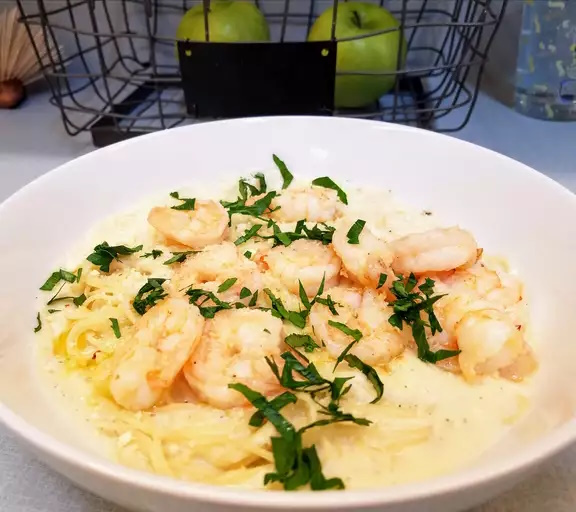

Fettuccini Alfredo
Noodles, butter, flour, garlic, milk, hot sauce, and parmesan cheese. If you like thinner noodles, use linguine noodles.

Ingredients
- 8 ounces dry fettuccine pasta
- 4 ½ tablespoons butter
- 2 ½ tablespoons all-purpose flour
- 2 cups milk
- 1 teaspoon minced garlic
- 5 drops hot pepper sauce
- ½ cup grated Parmesan cheese
Directions
- Cook pasta in a large pot of boiling salted water.
- Meanwhile, melt butter or margarine in a saucepan. Stir in flour. Whisk in milk, garlic, and hot sauce; stir until thickened. Stir in cheese.
- Drain pasta. Serve sauce over noodles.